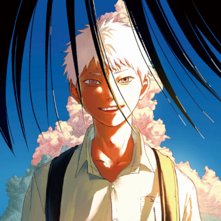
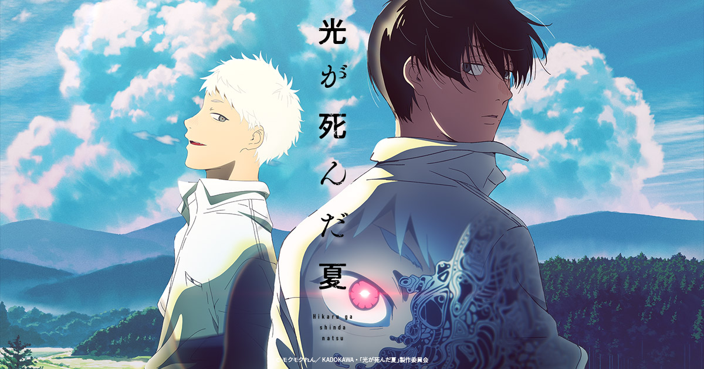
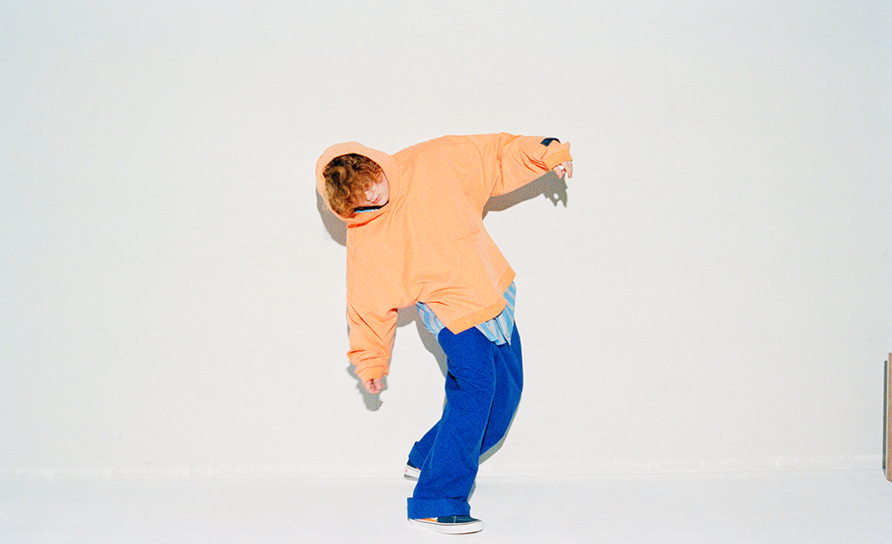

Vaundy
再会
2025.11.14
Digital Release
RELEASE


TVアニメ
『光が死んだ夏』
オープニング主題歌
公式サイト
MUSIC VIDEO
Vaundy - 再会 【OFFICIAL MUSIC VIDEO】
BIOGRAPHY

Vaundy
Vaundy（バウンディ）、25歳。
作詞作曲からアレンジ、デザイン、映像ディレクションまで手掛けるマルチアーティスト。
2019年にYouTubeへ楽曲投稿を開始し、「東京フラッシュ」「不可幸力」などでSNSを中心に注目を集める。以降、17曲が1億回再生を突破し、日本ソロアーティスト1位を記録。
総再生数は95億回以上に達している。
「逆光」(Ado)、「透明になりたい」(平野紫耀/Number_i)、「おもかげ」(milet×Aimer×幾田りら)など楽曲提供も行い、映像監督やセルフプロデュースなど幅広く活躍。
紅白歌合戦に2度出場し、CM・ドラマ・映画・アニメ主題歌としても多くのタイアップを獲得している。
2023年には全35曲収録の2ndアルバム「replica」を発表。
翌年は「タイムパラドックス」「風神」などが大ヒットし、NHKで初のドキュメンタリー番組も放送。
2025年には毎月の楽曲リリースを掲げ、アニメ『SAKAMOTO DAYS』や是枝裕和監督映画『ラストシーン』の主題歌など話題作を次々と発表。
ライブは全公演即日完売。日本武道館2days、全国アリーナツアーで数十万人を動員し、2026年には最年少で4大ドームツアー開催が決定している。
唯一無二の声と多面的な音楽表現で令和を代表するアーティストとなっている。